MTF 声音女性化练习手册
By Aoi
2021 年 7 月 第一版 ｜ 2026 年 5 月 第二版
目录
写在前面
背景知识
- 一、人声的生理解剖学知识
- 二、语音声学（Voice Acoustic）的概述
- 三、从管子到声道——共振峰是怎么"长"出来的（新增）
声音的性别感知
- 一、元音的共振峰特征
- 二、普通话元音共振峰的性别差异数据（新增）
- 三、性别感知的关联因素
使用 praat 辅助声音练习
针对不同声音要素的具体练习
- 一、针对提高 F0
- 二、针对提高 F2（高喉位训练）
- 三、针对提高 F1
- 四、针对其他修饰性因素
为什么练习声音女性化
在开始所有的练习或讲解之前，有必要首先弄清楚一个问题：我们为什么要练习声音女性化？笔者认为，声音女性化并不是MTF的资格或义务。事实上，并不存在一种神秘的、本质的“女性声音”（这一点会随着我们之后的讲解逐渐明晰），而只是某一种类型的人声被经验地归纳为“女性性别特征”。归根结底，声音只是一个人在社会交往中使用的工具，一定程度的声音女性化有利于MTF被识别为女性、并因此更轻松地融入社会生活，实现自我认同与社会评价的一致性，改善社交水平，提高社会生活的质量。但这丝毫不意味着只有能发出女性性别特征的声音才能被承认为女性，这种观念不仅是对跨性别女性的排除，也是对大量发声特征偏离“女性性别特征”的顺性别女性的排除。
避免练习误区
MTF社群中已经有很多声音女性化的训练手册或视频等资料，但质量参差不齐，尤其是中文 MTF社群更是缺乏高质量的资料，很多MTF选择参考"伪声"等侧重娱乐性的教学视频作为练习的指导。这种教学视频存在很大问题，包括：
- 理论基础陈旧或混乱，以声乐技巧为主
- 概念模糊且不科学，例如“胸腔共鸣”“咽腔共鸣””头腔共鸣““气泡音”等等
- 缺乏客观的练习进度对照标准
- 训练方式单一且严重依赖“悟性”
事实上，声音女性化是完全可以用科学、准确的语言进行解释的。依赖于语音声学（Voice Acoustic）的知识，我们能够确定哪些声音特征具有性别区分的能力，以及这些声音特征与何种可以进行科学分析的音频数值有关，进而这些音频数值又与哪些生理的、解剖学上的人体结构有关。另一方面，依赖于声乐训练（Vocal Training）的既有技术，我们有很多方法可以练习控制和改变与发声有关的人体结构，达到声音女性化的目的。
记住我们的两大基石：语音声学和声乐技术。
了解了上面的知识，我们不难意识到：声音女性化的训练并不是靠天赋或者悟性之类玄而又玄的能力，它和其他所有知识学习一样，靠的是搭建语音声学的知识框架、使用声乐训练的方法勤加练习、再将练习的成果和知识相结合进行反思和分析。请千万不要忽略掉知识框架的搭建而直接进入练习，没有知识框架为你提供分析的工具和反思的参照，你的练习极有可能沦为盲目的挣扎，切记，切记。
另一方面，我们还要额外意识到另一个问题：为声音练习搭建知识框架≠把训练当作课业对待
声音女性化是一种需要学习的知识，但学习绝不等同于学生时代那种沉重的、应试的严肃课业，如果你在声音女性化的练习过程中找不到快乐的感觉，那你将在这条路上走得非常艰难。声音女性化的练习过程更像是你小时候咿呀学语的体验、或者你小时候和同伴玩耍时模仿各种声音（学机器人说话、学动画角色说话、过家家扮演老太太——你一定经历过这些）的体验，你在练习声音女性化时需要找到的正是这种有趣的探索式的体验。
放轻松，记住，你的声音是你的孩提时光留给你的宝库，你要足够贪玩才能找到开启宝箱的方法，别怕出糗，别怕搞出各种愚蠢可笑的动静，别端着成熟的架子，像个孩子一样玩你的声音，你玩得越尽兴，得到的就越多。
一、人声的生理解剖学知识
1、声道（vocal tract）的结构：
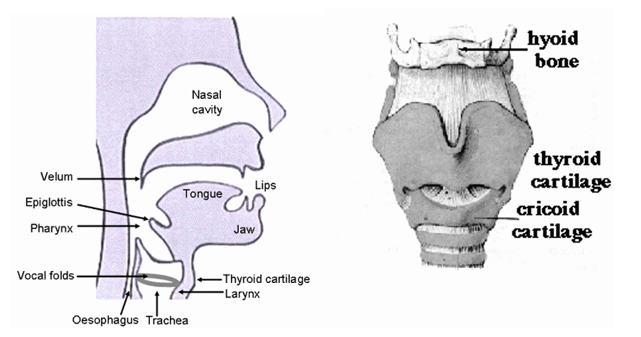
声带（vocal folds）：声带是两片白色的人体组织，由韧带和牵引韧带的肌肉、包裹韧带的黏膜组成。人在呼吸时声带打开，发声时声带闭合，气流从肺部出发，经气管向上流向声带，冲击处在闭合状态的声带，引起声带振动，从而发出有振荡波形特征的声音。
想象一个电动气泵，泵就是你的肺，声门就是气泵的喷口，声带就相当于你在气泵的喷口悬挂一张小纸片尝试挡住它，当气泵喷气时，小纸片就会扑簌扑簌地响。
咽部（pharynx）：广义上是声门上方腔体结构的统称（包括鼻腔、口腔和喉咽部），狭义指下咽部即喉咽部，是会厌下方到声带上方的腔体，也是空气在声带形成振动后流经的第一个腔体。
会厌（epiglottis）：声带上方的一块软骨，是舌骨体的一部分，在呼吸和发声时，会厌翻起，使喉腔敞开，气流得以流出，在饮水和进食时，会厌翻下，遮住声带和气管，避免水和食物进入气管。会厌的翻起程度可以在一定程度上影响声音的音色。
喉部（larynx）：包含声带、甲状软骨、环状软骨在内的器官结构。
软腭（velum 或 soft palate）：口腔上壁的后 1/3，也是口腔和鼻腔之间的开口部，主要由肌、肌腱和黏膜构成，可以活动，放松状态下可以使口腔与鼻腔联通，闭合时可以起到关闭鼻腔的作用。
舌头（tongue）：分为舌尖、舌体和舌根，舌根通过会厌沟连接至会厌，舌尖和舌根都可以相对独立地活动，舌头在口腔内的前后、高低位置均能够改变声音的音色。
舌骨（hyoid bone）：是喉部上方的一个 U 形骨骼。舌骨从上方支撑喉部，其本身通过肌肉和肌腱附着在下颌骨上。舌骨和其附属肌肉的活动对于在吞咽和说话过程中提升喉部很重要。
甲状软骨或俗称喉结（thyroid cartilage）：是喉部前壁的主要部分，位于甲状腺上方，可以保护位于它后方的声带。当甲状软骨和环状软骨的相对角度发生变化时，音高会随之变化。
环状软骨（cricoid cartilage）：喉部的下部由称为环状软骨的圆形软骨组成。这个软骨的形状像一个环，环的大部分在后面。环状软骨下方是气管环。
2、与发声相关的肌肉系统
喉部的运动由两组肌肉控制，在喉部内负责移动声带和其他肌肉的肌肉称为喉内肌肉，喉部在颈部上的位置则由称为喉外肌群的另一组肌肉控制。
喉外肌群——喉部的"升降系统"
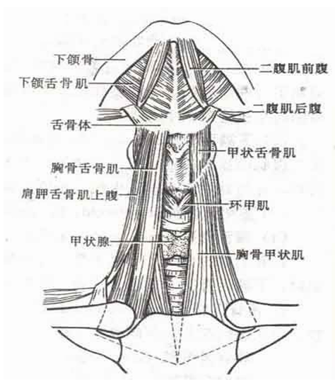
喉外肌群，又称舌骨的上下肌群，从舌骨体的位置区分，在舌骨体上方的几个肌肉称为舌骨上肌群，在下方的称为舌骨下肌群。
但这里有一个非常重要的知识点，很多教程都讲错了或者过度简化了：喉结（甲状软骨）的抬升不是单一肌群的功劳，而是一个精密的三步联动过程。
想象你的颈部有三个关键节点，从上到下依次是：
- 锚点A：颅底和下颌骨（坚硬的固定基座）
- 中转站B：舌骨（颈部唯一不与其他骨头直接相连的"悬浮骨"）
- 载荷C：甲状软骨/喉结（包含声带的"声源舱"，通过甲状舌骨膜挂在舌骨下方）
三步提喉的真实机制：
第一步——"拉高天花板"：舌骨上肌群的锚定
舌骨上肌群（包括下颌舌骨肌、颏舌骨肌、二腹肌前腹等）的收缩，以颅底和下颌骨为支点，把舌骨向上、向前强力拉起并固定住。注意：这些肌肉的止点在舌骨，不在喉结——它们并不直接拉动甲状软骨。
第二步——"收起吊绳"：甲状舌骨肌的直接牵引
这是最关键、也最容易被忽略的一步。甲状舌骨肌在传统解剖学上被归类为"舌骨下肌群"，听起来好像是拉低喉部的。但实际上，当舌骨被上肌群稳稳固定住之后，甲状舌骨肌收缩会直接把甲状软骨（喉结）向上拉向舌骨——就像做引体向上：单杠（舌骨）被固定在上面，你的手臂（甲状舌骨肌）用力收缩，把你的身体（喉结）拉向单杠。
第三步——"后方辅助"：咽纵肌群的垂直提拉
咽纵肌群（包含茎突咽肌、腭咽肌、咽鼓管咽肌）从颅底或软腭延伸下来，附着在甲状软骨的后缘。它们收缩时，在后方提供整体的垂直向上提拉力，辅助喉部整体上升。
"刹车系统"：舌骨下肌群中的其他成员
胸骨甲状肌、胸骨舌骨肌、肩胛舌骨肌等，它们的作用是把喉部往下拉。如果提喉时这些肌肉不放松，就会形成"肌肉拔河"，导致颈部剧烈疼痛而喉结纹丝不动。
舌头——一个"肌肉水球"
舌头在生物力学上有一个很特别的身份：它是一个肌肉静水骨骼（muscular hydrostat）。什么意思呢？想象一个装满水的气球——你捏住一端，另一端就会鼓起来。舌头内部由不可压缩的水分和紧密交织的肌肉纤维构成，没有硬性骨骼支撑，它的总体积永远保持恒定。所以，对舌头在某一个方向的压缩，必然导致它在另一个方向的膨胀。
控制舌头的肌肉分为两大类：
舌外肌（一端连骨头，一端插入舌体）——负责整体搬运舌头的位置：
- 颏舌肌（Genioglossus）：最大最厚的舌外肌，从下颌骨内侧呈扇形向后上方辐射。它的后部肌束收缩时，把整个舌根连同舌体向前上方推举，使舌面贴近硬腭前部——这是发出 /i/、/e/ 等前元音的核心动力，也是推高 F2 的关键。
- 舌骨舌肌（Hyoglossus）：从舌骨向上延伸插入舌体两侧。收缩时把舌体向下、向后拖拽，使舌根后压向咽腔——这是发低后元音（如 /a/）时的主力，但如果它不受控地紧张，就会把舌骨往下拽，破坏提喉动作（后面练习章节会详细讲）。
- 茎突舌肌（Styloglossus）：从颅底颞骨的茎突向下前方走行进入舌体。收缩时把舌头向后上方牵引，使舌背在软腭下方隆起——是发 /u/、/o/ 等后高元音的主力。
舌内肌（起止点都在舌体内部）——负责精细雕刻舌面形状：
- 上纵肌/下纵肌：沿舌体前后延伸，收缩时使舌体缩短，舌尖上卷或下弯
- 横肌：收缩时使舌体变窄变厚，舌面向上隆起
- 垂直肌：收缩时把舌体压扁变宽
舌骨——一切的"十字路口"
舌骨是理解发声肌肉协作的关键枢纽。它悬浮在颈部，上方连着控制舌根的肌肉（舌骨舌肌），下方连着提喉的甲状舌骨肌。这意味着：
- 如果舌根紧张（舌骨舌肌收缩），舌骨会被向下拽 → 甲状舌骨肌失去支点 → 喉结提不上去
- 如果舌骨被上肌群稳稳固定在高位，舌根放松 → 甲状舌骨肌才能有效工作 → 喉结顺利上提
这就是为什么"舌根放松"和"提喉"在声音女性化中是一对必须同时解决的问题——它们通过舌骨这个物理桥梁紧密相连。
喉内肌肉
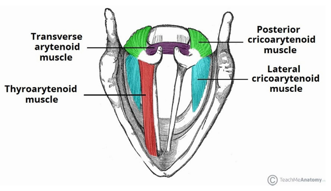
喉内肌作用于喉的各个组成部分。它们控制声门的形状（声带和杓状软骨之间的开口），以及声带的长度和张力。
甲杓肌（thyroarytenoid muscle）：又称为声带肌，是声带的肌肉层，负责放松声带韧带、缩短声带。
环杓侧肌（lateral cricoarytenoid muscle）：从环状软骨前部延伸到杓状软骨的肌肉，负责内收声带。
环杓后肌（posterior cricoarytenoid muscle）：又称为环杓副肌，一对从环状软骨后部延伸到杓状软骨的肌肉，负责打开声带。
杓间横肌（transverse arytenoids muscle）：负责连接两侧杓状软骨。
环甲肌（cricothyroid muscle）：连接环状软骨和甲状软骨前部。收缩时拉长并绷紧声带，使振动频率升高——这是提高音高（F0）的核心肌肉。
唇颌系统——声音的"最终调音台"
口唇是声波辐射到外界的最终关口，它的形态对声音的高频特性影响巨大：
- 口轮匝肌：包绕口裂的环形肌肉，收缩时使嘴唇向前突出并收拢（圆唇），这会拉长声道、缩小出口，把共振峰频率往下拽
- 展唇肌群（笑肌、颊肌）：与口轮匝肌互为拮抗，收缩时把嘴角向两侧拉开（展唇），缩短声道等效长度，让共振峰频率上升——这就是"微笑发声法"能让声音变亮的原理
- 咬肌与颞肌：强大的闭口肌。很多男性习惯在咬肌紧张的状态下讲话，导致口腔无法有效张开，F1偏低。放松咬肌、让下颌自然下沉，是提高 F1 的前提
复习问题：
1、声音从肺部产生后经过哪些位置？
2、喉结和声带分别在什么位置？
3、提喉的三步联动机制是什么？各步骤分别由哪些肌肉负责？
4、舌骨在发声系统中扮演什么角色？为什么说它是"十字路口"？
5、舌根紧张为什么会影响提喉？
尝试：
1、咽一下口水，摸一摸下颌骨舌肌的位置，感觉到它绷紧了吗？再摸摸喉结，感受它向上移动然后落回原位的过程。
2、环住脖子，用力作出愤怒的表情，感觉到舌骨下肌群的运动了吗？
3、张开嘴，把舌头用力向前伸出，同时用手摸喉结——你能感受到喉结也跟着上移了吗？这就是颏舌肌前推舌体时带动舌骨上升的效果。
二、语音声学（Voice Acoustic）的概述
1、源-滤波器理论（Source-Filter Theory）
源-滤波器模型是一种关于语音（人声）产生的理论，它认为从发声者口中向外发出的、具有复杂波形的声音，取决于两个部分：
1、源（Source）——声门的波形
2、滤波器（Filter）——声道（vocal tract）对源的波形施加的放大和减弱作用
或者简单地说：源产生初始声音，声道滤波器对其进行修改。
对源的进一步解释：
发出浊音时，声带会振动，空气以不同的宽度通过，从而产生声波。你可以试试将手指放在靠近喉部的位置上（比如喉结上），然后大声唱歌或说话，你会感觉到振动的存在。
浊音中产生的振动通常包含一组不同的频率（frequency），称为谐波，不同的频率有着不同的音量（amplitude），通常我们以横坐标表示频率高低，纵坐标表示特定频率对应的音量高低，以此绘制一个声音的频谱图。
对滤波器的进一步解释：
源产生的声音波形由滤波器改变，舌头的位置和嘴巴张开的形状会造成不同的频率改变，因此发出的声音会有所不同。你可以尝试以恒定的音高和音量唱出一个持续的音符（比如大声发出啊的声音），在持续发音的过程中改变你嘴巴的开闭程度和舌头的上下前后位置，你会发现你发出了其他元音或音素的声音。比如张嘴发出"啊"声，然后慢慢把唇形变小变圆，你会发现你的声音变成了"欧"。
软腭的位置也会造成滤波器的改变。你可以尝试分别发出"嗯"和"啊"这两个声音，然后尝试用手指捏住鼻子张开嘴，然后松开鼻子捏住嘴，你会发现软腭有连通口腔和鼻腔的作用，也会意识到鼻腔的状态也可以影响和改变声音。
虽然源滤波器理论是对语音（人声）的一个很好的近似解释，但我们必须记住这个理论只是一个近似。语音产生的实际过程是非线性和时变的，源和滤波器之间也不是纯粹的单向关系，而是存在复杂的交互作用。当需要从严格意义上讨论语音问题时，这一理论往往是不充足的。然而，这个理论在大部分情况都能给出合理的近似，因此，许多语音技术都基于这个理论。
在进一步学习前，我们还需要强化理解两个语音声学中描述声音特性的常用概念：1、音量（amplitude），声波的振动幅度，也代表着被听到的声音的大小；2、频率（frequency），声波的振动速度，频率越高，振动越快，声音听起来越尖锐，频率越低，振动越慢，声音听起来越低沉，人耳能听到的声音频率范围在 20-20000Hz之间。回忆一下中学的物理课，你应该能记起这些概念。
有了上面这些知识，现在我们就可以来实践一下源-滤波器理论：
声道处在某个自然状态时，给声道滤波器施加频率由高到低连续的源声波，滤波器的响应（即声道发出的声音）频谱图如下：
（频谱图：横坐标频率 0-5000Hz，纵坐标响应幅度，在约 500Hz、1500Hz、2500Hz 处出现峰值）
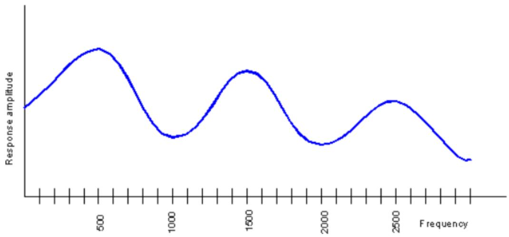
记得我们上面说的谐波吗？真实的声带发出的源声波（谐波）是这样的（不是连续的，而是若干组特定的频率）：
（谐波图：从 100Hz 开始，每隔 100Hz 一根竖条，幅度随频率升高而递减）
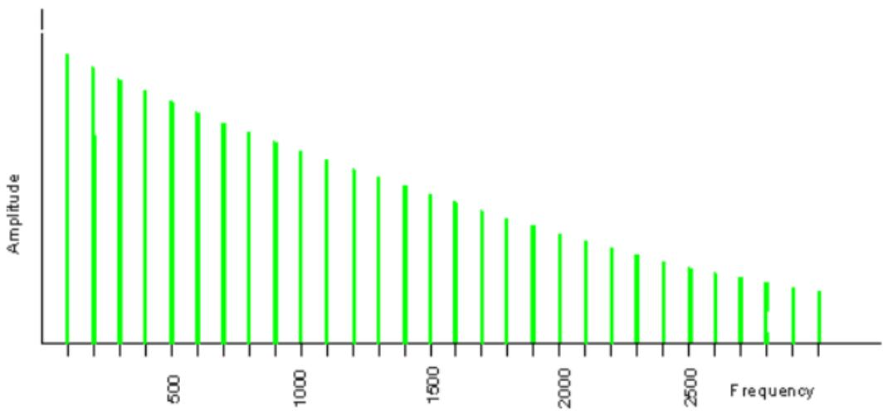
还记得我们的源-滤波器理论吗？没错，将上面两幅图（滤波器的响应和源声波）结合起来，我们就得到了一个真实的人声频谱图：
（人声频谱图：谐波竖条的包络呈现出在 500Hz、1500Hz、2500Hz 处的峰值形状）
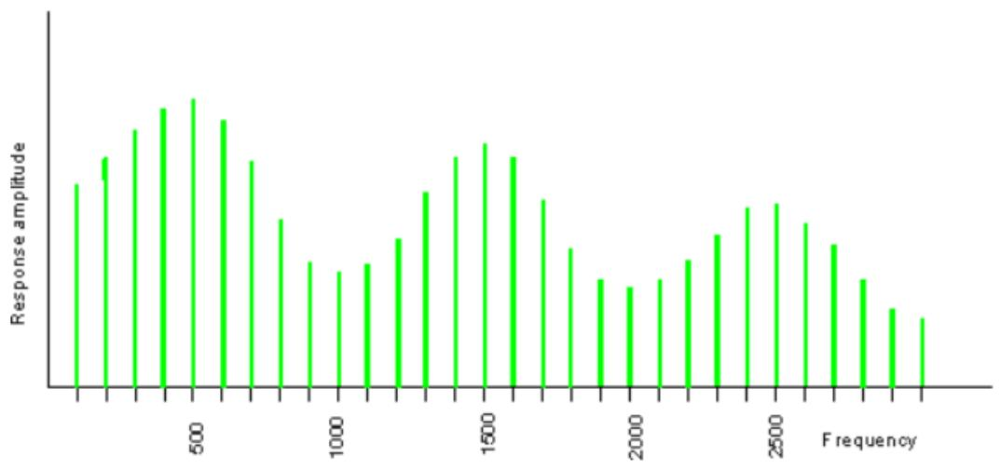
当你用相同的音高说不同的元音时，谐波将保持相同的距离（即频率的数量不变，也就意味着竖条的间距不变），但最高点会在不同的频率上（不同的左右位置）。
当你用不同的音高说同一个元音时，最高点的频率（左右位置）和频谱的整体形状保持不变，但谐波的间隔会不同（即频率的数量增减，也就是竖条变多或变少）。
看，你现在可以读懂这些频谱图了。你一定想知道这些最高点的左右位置和频谱的形状到底意味着什么，这就是我们下面要讲到的共振和共振峰。
2、共振与共振峰
共振：
每个物体都有它们固有的振动频率。如果你试图以不同的频率振动它，振动将被抑制并最终消失。如果你以它固有的频率振动它，振动将得到加强，并产生共振（Resonance）。
共振的一些例子：
拿着跳绳一端周期性上下抖动时在绳上产生的驻波
对着一个半满的啤酒瓶瓶口吹气，你会听到一个恒定的音符
小提琴响板上的振动
当你恰到好处地推动秋千时，秋千会荡得更高
如果你试图让一个物体以固有共振频率的两倍去振动，效果不会很好。如果你试图让它以固有共振频率的三倍去振动，它将再次产生共振——尽管没有较低的共振频率振动得那么强。这种情况会重复出现——最低共振频率的每一个奇数倍都是一个有效的共振频率。
对于一个 17厘米长的半开管状乐器（这是成年男性声道的典型长度），它的共振频率是 500赫兹、1500赫兹、2500赫兹、3500赫兹，以此类推。
还记得上一节最后的频谱图吗？不妨回看一下，你会发现频谱图上的几个最高点恰好处在 500Hz、1500Hz、2500Hz 的位置，所以你会发现，人声和管状乐器发出的声音类似，也同样是一种共振的声波。
在语音声学中，我们将人声发声过程中在声道中出现的每次共振按照产生共振频率的高低，排列为 R1、R2、R3……Ri。记住这个概念，我们下面还会用到。
共振峰：
我们刚刚提到了频谱图的最高点，这些最高点就被称为共振峰（formant），共振峰在语音声学上的严谨定义比较难懂，如果愿意了解，可以看下面的内容：
James Jeans (1938)用共振峰来表示通过共振增强的音符谐波的集合。
Gunnar Fant (1960)给出的定义："声谱的谱峰 | P ( f )| 被称为共振峰"。
Benade (1976)给出的定义："在频谱包络中观察到的峰值称为共振峰"。
简单地理解，共振峰就是频率响应曲线中的每个凸起，也就是声音的所有频率中若干个音量最大的共振频率。它们通常被称为 F1、F2、F3 等。
通过上面的分析你会发现，一个人声是具有多个共振峰的。我们将这些共振峰的频率由低到高称为 F1、F2、F3、……Fi。还记得我们上面刚刚说过的 R1、R2、R3……Ri 吗？没错，这两者是一一对应的关系，一次共振（Ri），就对应一个共振峰频率（Fi），大部分情况下，我们用 F1——Fi表达具体的某个共振峰频率，而较少使用R1——Ri，但很多文献和资料中也会将两者混合使用，我们只需要知道这两者的含义是大致相同的即可。
在前面那类频谱图（横坐标是频率，纵坐标是音量）中识别共振峰是容易的（波形的极大值点），但下面我们要介绍另一种更加复杂但也更常用的频谱图，它的横坐标是时间，纵坐标是频率，而音量采用颜色深浅来表示，颜色深表示音量大，颜色浅表示音量小。
或者更直白地说，就是将前面那类频谱图压扁成一条线，原先的高点涂黑，原先的低点涂白，然后旋转变成一条竖线，这条竖线就是一个时间点上特定的频谱，将所有竖线从左至右排列，就得到了时变的频谱图。这类频谱图称为时变频谱图（时频图）。
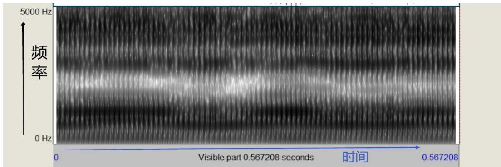
我们把颜色最深的点（也就是非时变频谱图上的最高点）标出，就得到了共振峰曲线（红点），由下（低频）至上（高频）依次是 F1、F2、F3、F4、F5。
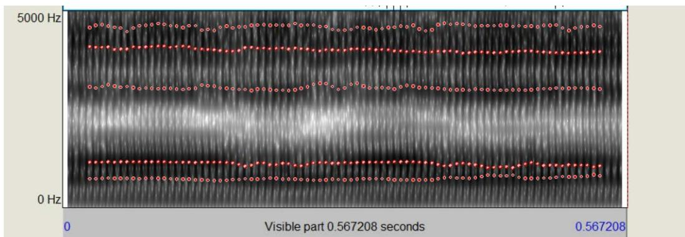
另外一个值得关注的问题是，你会发现时频图呈现出一道一道的竖条，而当你用更高的声音发音时，这些竖条的间隔变得更窄了。
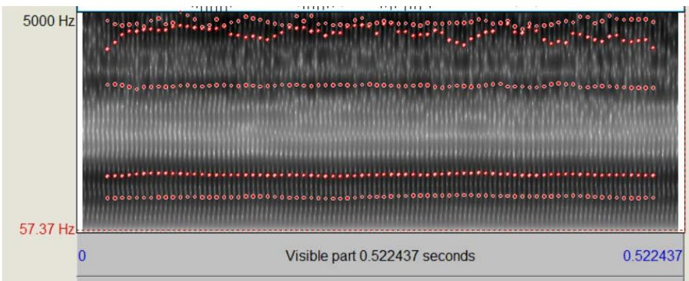
声音高时，波形更密集，声音低时，波形更稀疏，这种总体的声音频率高低，我们称为基准频率或基频（Base Frequency），写作 F0。但 F0 本身并不是一个单独的共振峰频率，这种写法只是为了方便记述。正如上面两图所示，虽然 F0从 140Hz 提高到了240Hz，但时频图的明暗分布、共振峰曲线的位置（也就是共振峰频率值）和数量，都并没有发生明显的变化，也就是说，F0的高低并不影响一个声音本身的共振峰特性。
另外，大部分声乐理论中有音高（Pitch）的概念，它和语音声学理论中的 F0基频是等价的，我们在后面可能同时使用这两种概念，请牢记它们的关系。
不管从非时变频谱图中，还是从时变的频谱图中，我们都可以按照一定规律找到声音的基频和共振峰。请记住，共振峰 Fi 是我们分析声音特征的核心工具。我们随后就要初步探究它。但现在，让我们回顾一下这一节的知识：
复习问题：
1、声音的源是什么？滤波器对应的是什么结构？
2、当横坐标是频率，纵坐标是音量时，如何找到一个声音的共振峰？
3、当横坐标是时间，纵坐标是频率时，如何找到一个声音的共振峰？
4、基频和音高的关系是什么？
5、源和滤波器之间的非线性耦合是什么？它对高喉位发声有什么意义？
尝试：
1、微张开嘴，尝试发出一点声音，让声带振动起来
2、保持持续发音，捏捏你的鼻子，随意动动你的舌头，听到你的声音在变化吗？你发现滤波器的工作方式了吗？
三、从管子到声道——共振峰是怎么"长"出来的
上一节我们知道了共振峰是什么（频谱上的能量峰值），也知道了声道像一根管子一样产生共振。但你可能还有一个疑问：为什么动动舌头、抬抬喉结，共振峰就会变？ 这背后的物理直觉其实并不复杂。
水管捏扁的比喻——扰动理论
想象你手里拿着一根花园浇水用的软管，水在里面流动。如果你在管子的某个位置用手捏扁它，水流的行为就会改变——捏的位置不同，效果也不同。
声道里的空气振动也是类似的道理。声学上有一个叫做"扰动理论"（perturbation theory）的框架，它的核心思想很简单：
听起来有点抽象？我们用具体例子来感受：
F1——"开口度共振峰"
F1 的驻波模式有一个特点：它的压力波腹在声门附近（管子的封闭端），速度波腹在嘴唇附近（管子的开放端）。
- 当你张大嘴（口腔前端扩张）：扩张发生在速度波腹处 → F1 升高
- 当你闭紧嘴、舌面抬高（口腔前端收窄）：收窄发生在速度波腹处 → F1 降低
所以 F1 和"嘴巴张开程度"（或者说舌面高度的反面）直接挂钩：嘴越开、舌越低 → F1 越高。这就是为什么 /a/（啊）的 F1 很高（嘴大张），而 /i/（衣）的 F1 很低（嘴几乎闭合）。
F2——"前后位共振峰"
F2 的驻波模式更复杂一些，但有一个关键特征：它的压力波腹大约在口腔前部（硬腭前段附近）。
- 当你舌头前伸，舌面贴近硬腭前部：收窄发生在压力波腹处 → F2 升高
- 当你舌头后缩，舌根靠近咽壁：收窄远离了 F2 的压力波腹 → F2 降低
所以 F2 和"舌位前后"直接挂钩：舌越前 → F2 越高，声音越"亮"；舌越后 → F2 越低，声音越"暗"。
另外，喉位的高低对 F2 有全局性的影响：抬高喉结 = 从底部截短整个声道 = 所有共振峰都往上移，但 F2 受益最大。这就是为什么高喉位训练是声音女性化的重中之重。
F3——"唇形与舌尖共振峰"
F3 对嘴唇的圆展和舌尖的卷曲特别敏感：
- 展唇（咧嘴微笑）→ 声道末端缩短 → F3 升高
- 圆唇（噘嘴）→ 声道末端拉长 → F3 降低
- 卷舌（舌尖向后卷起）→ 在舌尖后方形成一个小旁腔 → F3 急剧下降
把解剖学和声学连起来
现在我们可以画一张清晰的对应关系图了：
| 你做的动作 | 声学效果 | 听感 |
|---|---|---|
| 张大嘴、放低舌面 | F1 升高 | 声音更"开"、更通透 |
| 舌体前推、贴近硬腭前部 | F2 升高 | 声音更"亮"、更清脆 |
| 抬高喉结（缩短声道） | F2、F3 整体升高 | 声音从暗沉变明亮 |
| 展唇（微笑） | F2、F3 升高 | 声音更"甜"、更年轻 |
| 圆唇（噘嘴） | 所有共振峰降低 | 声音更"闷"、更浑厚 |
| 舌根后缩 | F2 降低 | 声音变暗、变"男性化" |
复习问题：
1、扰动理论的核心思想是什么？
2、F1 主要受什么因素影响？F2 呢？
3、为什么抬高喉结能让声音变亮？从声学角度解释。
4、圆唇为什么会让声音变闷？
尝试：
1、保持音高不变，先发 /a/（啊），然后慢慢把舌头往前推、嘴型不变——听听声音是不是变"亮"了？这就是 F2 在升高。
2、保持发 /a/ 音，先用正常嘴型，然后慢慢咧开嘴微笑——听听高频是不是更清晰了？这就是展唇对 F3 的影响。
3、发一个持续的 /i/（衣）音，然后慢慢把嘴唇噘起来变成 /y/（鱼/ü）——你能听到声音变"圆润"了吗？这就是圆唇把共振峰往下拽的效果。
一、元音的共振峰特征
当我们发出一个单元音时（在汉语普通话里，通常是 a、o、e、i、u），我们的人声会产生多个共振峰。
元音的 F1 通常在 200 Hz到 800 Hz 之间，嘴型越小，F1越小，相反地，嘴巴张开会使 F1大幅增加。
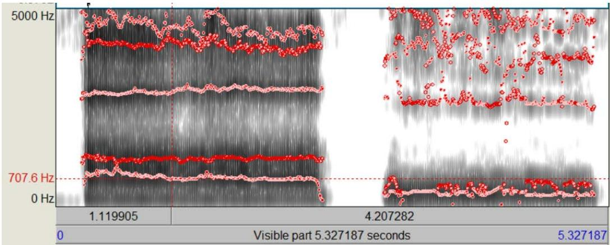
元音的 F2 典型值约为 800 至 2000 Hz。通过使嘴唇变圆或展开、升高或降低喉部，可以较大程度地改变 F2。
另外，根据发音时舌位的高低和前后，元音可以分为高元音、低元音、前元音和后元音。其中，F1的频率受舌位高度的影响：高 F1 = 低元音 = 低舌位，低 F1 = 高元音 = 高舌位。F2的频率则更多受舌位前后影响：高 F2 = 前元音 = 前舌位，低 F2 = 后元音 = 后舌位。
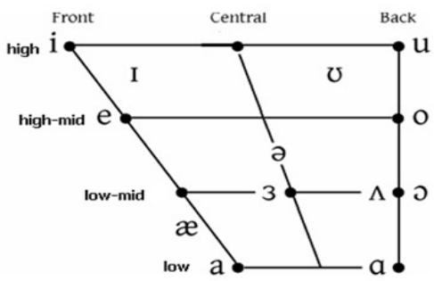
以实际的声音为例，前舌位发 a 音的 F2在1200Hz 左右，后舌位发 a音的 F2在 1000Hz 左右。
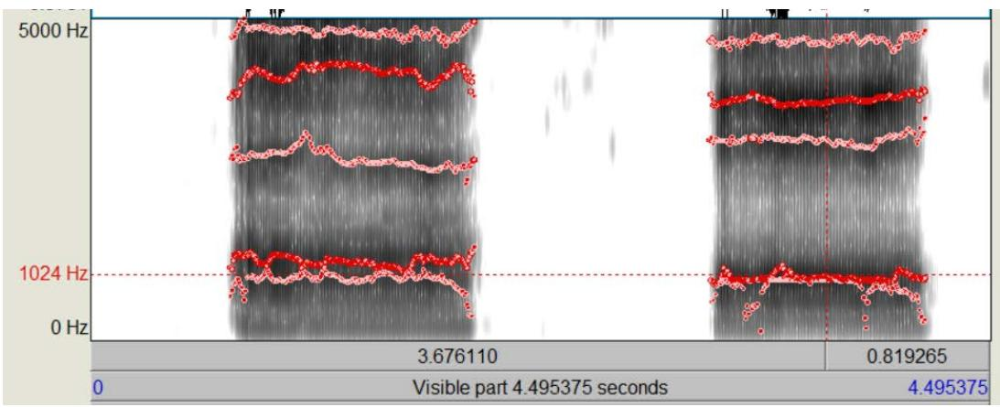
F1 与 F2都受口腔大小、口型、舌位、喉位的影响，但总的来说，F1受嘴巴张开的影响最大，F2 则受舌根紧缩位置（即喉位）的影响最大。F3则与卷舌程度、圆唇和鼻音有关。
二、普通话元音共振峰的性别差异——数据与解释
上面我们了解了共振峰和发声结构的关系，现在来看一个对声音女性化至关重要的问题：男性和女性发同一个元音时，共振峰到底差多少？为什么会差这么多？
数据：普通话核心元音的男女共振峰对比
下表基于大量针对母语为汉语普通话的成年男女性说话者的声学研究数据：
| 元音 | 拼音示例 | 性别 | F1 (Hz) | F2 (Hz) | F3 (Hz) |
|---|---|---|---|---|---|
| /a/ | 啊、巴 | 男性 | 710-750 | 1200-1350 | 2400-2600 |
| 女性 | 880-950 | 1400-1500 | 2700-2900 | ||
| /i/ | 衣、必 | 男性 | 300-360 | 1750-2150 | 2700-3100 |
| 女性 | 350-440 | 2300-2750 | 3100-3400 | ||
| /u/ | 乌、不 | 男性 | 350-440 | 700-1000 | 2300-2500 |
| 女性 | 400-490 | 750-1100 | 2600-2800 | ||
| /e/ | 额、背 | 男性 | 470-520 | 1100-1350 | 2400-2600 |
| 女性 | 550-650 | 1300-1700 | 2800-3100 | ||
| /o/ | 哦、播 | 男性 | 400-450 | 680-850 | 2400-2700 |
| 女性 | 450-500 | 760-950 | 2300-2800 | ||
| /y/ (ü) | 鱼、女 | 男性 | 320-380 | 1600-1800 | 2200-2400 |
| 女性 | 350-420 | 2000-2300 | 2600-2900 |
（表中加粗的数值表示性别差异特别显著的共振峰）
解读：不只是"管子短15%"那么简单
你可能会想：女性声道平均比男性短约15%（女性约14cm，男性约17cm），所以共振峰整体高15%不就完了？
事实远比这复杂。 仔细看上面的数据，你会发现几个有趣的规律：
规律一：开口音 /a/ 的 F1 差异惊人地大
女性发 /a/ 时 F1 平均超过 900Hz，男性只有约 730Hz——差了将近 25%，远超声道长度差异能解释的范围。这说明什么？女性在发开口音时，下颌的下拽幅度、口腔的开放程度，在绝对空间维度上都往往超过男性。简单说：女性发"啊"时嘴张得更大、舌面压得更低。
而在高元音 /i/ 和 /u/ 中，F1 的性别差异就小得多（只差几十赫兹），因为这些音本来嘴就是闭着的，男女差别不大。
规律二：前元音 /i/ 和 /y/ 的 F2 差异极大
女性的 /i/ 音 F2 高达 2300-2750Hz，男性只有 1750-2150Hz——差了数百赫兹！/y/（ü）也是类似的情况。这说明女性不仅仅是因为咽腔较短，更因为她们在发前元音时习惯将整个舌体更加激进地前推，使舌面最高点更贴近硬腭前部。
规律三：圆唇音 /u/、/o/ 的性别差异相对较小
在 /u/ 和 /o/ 中，无论男女的 F2 都很低（低于 1100Hz）。这是因为圆唇的物理效应太强了——它同时增加声道长度并缩小出口面积，产生强大的频谱向下平移作用。即便你已经极力抬高了喉结，圆唇的低频抑制效应依然很容易把声音"拉回"男性的暗沉音色。
元音声学空间（VSA）——一个整体性的视角
如果我们把每个元音的 F1 和 F2 画在一个二维坐标系上（横轴 F2，纵轴 F1），所有元音的点连起来就形成一个多边形，这就是"元音声学空间"（Vowel Space Area, VSA）。
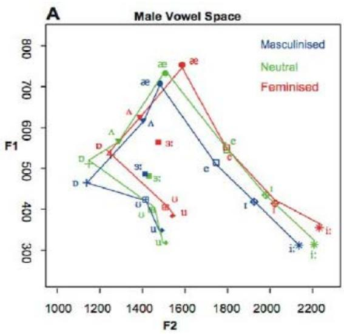
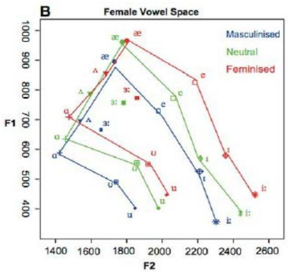
研究发现：女性的 VSA 多边形面积显著大于男性。
这意味着什么？女性在日常说话时，各个元音之间的区分度更高——/a/ 就是很开的 /a/，/i/ 就是很前的 /i/，每个音都发得更"到位"、更"极致"。而男性倾向于使用更"含混"、更趋向中央的发音方式，各个元音之间的差异没那么大。
所以，声音女性化不仅仅是"把共振峰往上移"，更是从"慵懒含混"的发音模式转向"精准清晰"的发音模式。 你需要让每个元音都发得更饱满、更极致——嘴该张大时就大胆张大，舌该前推时就用力前推。
三、性别感知的关联因素
我们首先要谈到我们前面介绍过的一个概念，基频 F0，或者在声乐理论中被称为音高。有研究表明，在听众不知晓说话者性别的条件下，对其性别的识别是基于基频，即 F0 的，即使在共振峰频率特征与基频特征相反时仍然如此。
F0：声音女性化的基石
一般认为，男性说话声音的 F0 范围在 85-155Hz 之间，而女性说话声音的 F0范围在 165-255Hz 之间，看，非常巨大的差别。我们可以肯定地说，高的 F0 是声音被感知为女性的先决条件，也是声音女性化的基石。
F2：声音女性化的重要特征
除了 F0 的重要作用，很多研究还得出了一个相对一致的结论，F2是各 Fi 共振峰中最能够区分性别特征的一个，部分可能的原因在于，F2 受喉位高低影响，而高喉位可以缩短声道长度，使原本较长的男性声道（平均为 16.9 cm）向更短的女性声道（平均为 14.1cm）靠拢。高 F2 的声音往往被听者认为是明亮的（bright），而低 F2 的声音被感知为暗沉（dark）。相对于 F0，我们可以把 F2 称为声音女性化的重要特征。
F1：声音女性化的次要特征
至于 F1，或者说 R1，当下（尤其是国外）流行的一些声音女性化教程把 R1称为gender knob（性别旋钮），认为 R1 是声音女性化最重要的因素，笔者对此持保留意见。这类教程通常混淆了声学意义上的共振（resonance）和解剖学意义上声道腔体的区别，在这类教程中，R1被用来指代喉腔的腔体空间。但从语音声学的观点来看，受缩小喉腔空间、升高喉位等因素影响最大的是 R2 共振和其对应的 F2 共振峰。相反，R1共振和 F1 共振峰是受张嘴大小和舌位的影响。当然，F1共振峰仍然存在一些非常明显的性别感知上的区别，尤其是在开口程度较大的一些元音（如 æ、ʌ 、ə、 ɪ或相应的长元音）的发音上，F1特征体现了非常显著的性别差异，这可能是由于男性和女性发音时使用口型和舌位的习惯不同（正如我们在上面的数据中看到的，女性发开口音时下颌开度更大）。相对于 F0和 F2，我们可以把 F1 称为声音女性化的次要特征。
F0、F2、F1 共同构成了声音性别感知的主要因素。但除此之外，还有一些语音共振之外的因素也影响着声音的性别感知。比如一些研究指出，更多的声音调制（F0-SD，整个语音片段中 F0 的变化程度，或者说音调的起伏）是女性声音的典型特征，此外，更高的谐波噪声比 (HNR，意味着更重的呼吸声音)和更低的抖动值（Jitter，通常被感知为声音的"粗糙"程度）也都是女性声音相对于男性声音的区别，尤其是 HNR 代表的呼吸声音，有大量研究指出其对声音性别感知的重要性。
有了关于声音性别感知的知识，和对不同共振峰频率关联发声结构的了解，我们就可以真正开始声音女性化的练习了，但在这之前，我们还是要复习一遍这些重要的知识。
复习问题：
1、F1 受哪些发声结构的影响？
2、F2 受哪些发声结构的影响？
3、哪个因素是声音女性化的先决条件？
4、哪个因素是声音女性化的重要特征？
5、还有哪些因素影响声音的性别感知？
6、女性的元音声学空间（VSA）和男性相比有什么特点？这对训练有什么启示？
7、为什么发 /a/ 音时的 F1 性别差异特别大？
尝试：
1、先发出 a（啊）音，然后慢慢把嘴撅起来，直到发音变成 u（呜），感受张口程度对声音的影响
2、依次发出 i（衣）、æ（诶）、a（啊），感受舌头的高低变化
3、依次发出 i（衣）、ə（呃）、o（哦），感受舌头的前后变化
4、把手掌放在嘴巴前面，哈一口气，然后发出 a（啊）音，感受手掌上气流的变化
5、试着用"更夸张"的方式发 /a/——下巴比平时多放下来一些，嘴张得更大——听听声音是不是更"通透"了？这就是在模仿女性更大的开口度。
在开始练习之前，我建议先阅读这一部分。本节将简单介绍 praat 这款软件，你可以用这款软件直观地看到你所有声音的频谱（时频）图，分析你声音的音高、音量和共振峰特征，这会对你的练习起到很大帮助。这款软件的下载地址是：
https://www.fon.hum.uva.nl/praat/ 你可以根据你使用的操作系统选择合适的版本下载安装。
打开 praat，你可以使用 new/record mono sound 选项直接使用已经连接在电脑上的录音设备录制声音，或者也可以使用 open/read from file 选项打开电脑上储存的录音文件。
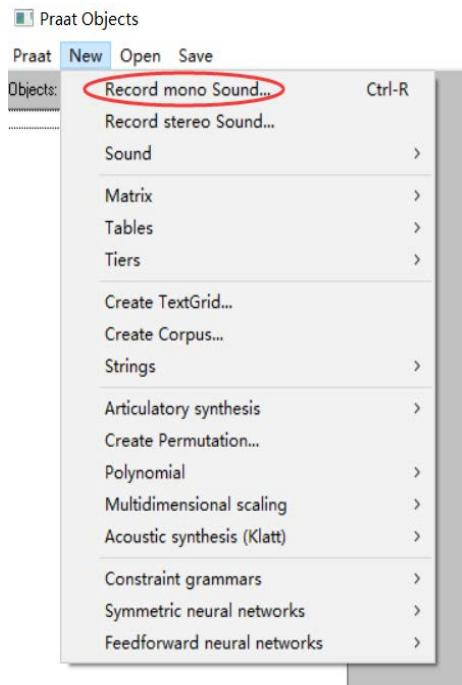
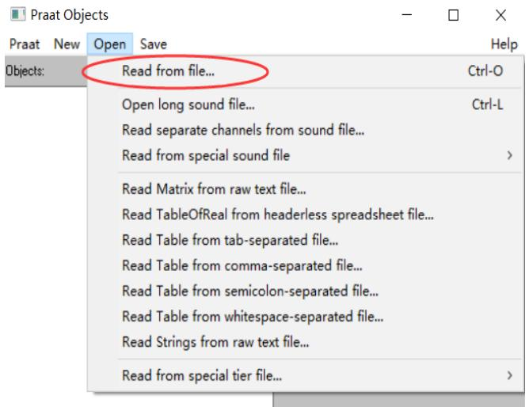
声音录制完成并保存（save to list）后，或打开录音文件后，你会看到右侧的菜单，我们一般使用 view&edit 功能来查看频谱图。
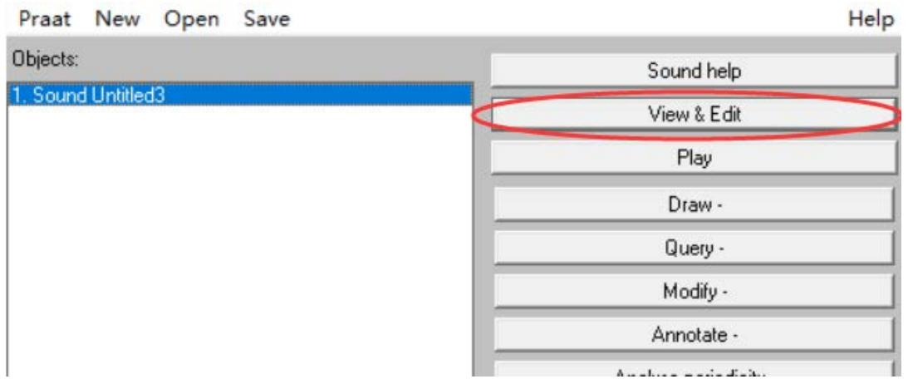
打开后的频谱图中，我们可以依次打开 spectrum（频谱图）、pitch（音高）、intensity（音强，等价于音量）、formant（共振峰），选择 show xx 将这些选项全部显示出来，我们可以看到熟悉的时频图图像，左侧是共振的频率范围，右侧是音高范围，蓝线是音高曲线，黄线是音强/音量曲线，红色的点就是软件计算出的近似共振峰位置。有了这些信息，我们就能根据掌握的共振峰特征知识来分析我们的发声方式，找出声音的问题所在，并根据相应的练习方法进一步修正。
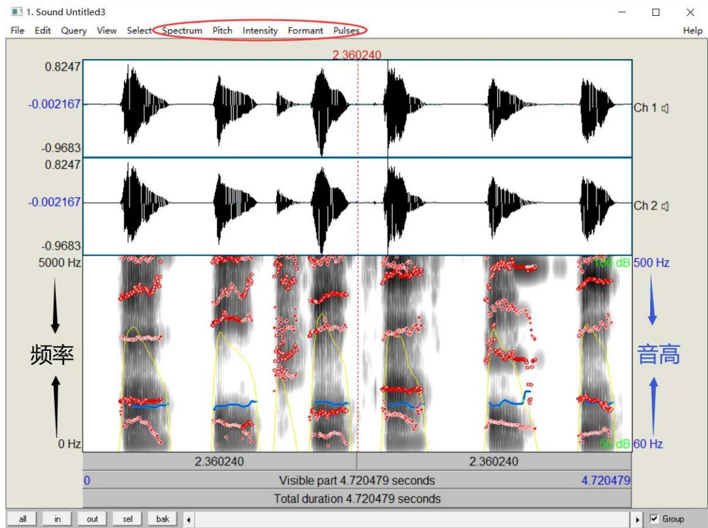
如果你的录音设备或录音环境噪音很大，建议更换更专业的录音设备，或者使用如 goldwave等音频编辑软件录音，使用软件中的降噪功能进行处理并保存，再通过 open/read from file 的打开方式导入 praat。
请注意，时频图中标示的音高曲线、音量曲线、共振峰点线等都是软件对声音信号进行分析后近似计算的结果，可能存在失准情况，如果出现严重违背常识的共振峰特征，可以尝试我们上面讲解过的观察明暗度的方式、结合每个共振峰的大致分布范围自行判断。
#针对不同声音要素的具体练习
一、针对提高 F0：
机制说明
F0（基频/音高）由声带振动的频率决定。控制音高的核心肌肉是环甲肌——它连接环状软骨和甲状软骨前部，收缩时拉长并绷紧声带，就像拧紧吉他弦一样，使振动频率升高。
女性说话声音的 F0 范围在 165-255Hz，男性在 85-155Hz。提高 F0 是声音女性化的第一步，也是先决条件。
练习方法
通常的练习方法：
爬音阶→找到转换点（breaking point，也就是你破音的点，或者如果你能区分真声和假声的话，是指你开始使用假声的点）→稍微降低一点，将其记录为你的女性声音基频，并保持此音高→尝试像机器人一样用恒定音高说话→尝试在此基频上音调起伏地正常说话
爬音阶时使用 praat 录音，观察共振峰图，可以看到蓝线呈阶梯状上升，这就是音高上升的过程。具有女性特征的音高通常在 180Hz 以上，你找到的合适音高一般也应在这个范围。
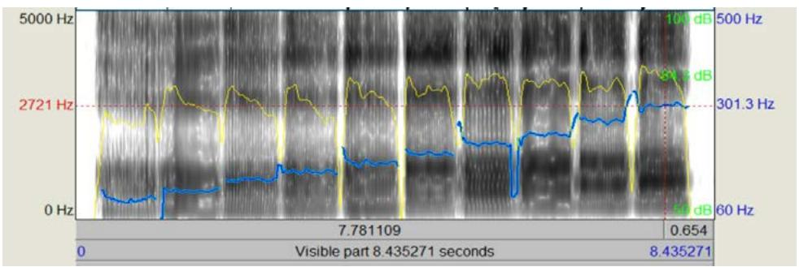
记住，我们之后的大部分练习，如果没有明确说明，都要在你找到的这个更高的 F0上发声。
自我评估标准
- ✅ 用 Praat 测量你的说话基频，稳定在 180Hz 以上
- ✅ 能以目标音高持续说话 30 秒以上而不感到明显疲劳
- ✅ 能在目标音高上进行自然的音调起伏（不是机器人式的平调）
- ⚠️ 如果你发现自己必须用假声才能维持目标音高，说明目标设得太高了，适当降低
二、针对提高 F2（高喉位训练）：
机制说明
正如我们前面讲过的，F2 和 F1 共同受很多发声因素影响，其中对 F2影响最大的是喉位的高低。高喉位对应高 F2，声音被感知为明亮，低喉位对应低 F2，声音被感知为暗沉。
现在你已经了解了三步提喉的真实机制，让我们把它和训练联系起来：
1. 舌骨上肌群（尤其是下颌舌骨肌）把舌骨拉高固定——这是"搭天花板"
2. 甲状舌骨肌把喉结拉向舌骨——这是真正缩短声道的核心动作
3. 咽纵肌群在后方辅助提拉
大部分没有受过声乐训练的人并不能很好地控制喉位高低，但一般来说，当你唱歌时，唱到很低的声部时，你会出现"压低喉咙"的自然反应，此时喉位偏低，而当你唱到很高的音部时，自然的肌肉代偿效应也会帮你拉高喉部。但这只是自然产生的肌肉代偿效应，是你在无法主动控制喉位的情况下你的整个舌骨肌群被迫作出的反应，因而不适合用于稳定的人声语音，真正主动控制喉位的方法还需要反复练习。
控制喉位是声乐训练中常见的基本练习之一。与声音女性化要求保持高喉位不同，声乐训练往往更侧重于使用低喉位或稳定中喉位。一部分声乐训练者认为高喉位发音会造成损伤，但另一些训练者指出，高喉位并不一定造成损伤，损伤是因为高喉位通常自然伴随着喉腔挤卡（throat tightness），而经过正确的练习，可以在高喉位的同时保持喉腔开放，便能避免出现损伤。
对于声音女性化训练，这是一个重要的提示，即练习稳定高喉位的同时，必须同时做喉腔开放的练习。很多练习者出现声音嘶哑或所谓"发干""粗糙"，就是缺乏喉腔开放的对应练习。
具体来说，我们有几个部分的分步骤练习：
（一）高喉位的练习：
舌根部位的收缩是提高喉位的关键，而这需要你学会动用并熟练控制舌骨肌群，尤其是舌骨上肌群中的下颌舌骨肌。我们有以下几种不同的练习方法：
1、吞咽训练，用手摸住喉结，或者对着镜子观察，咽一下口水，你会发现喉结向上移动，然后再落回原位。再咽一口，这次着重体验喉结移动到顶端时喉咙内部的感觉，你会感到整个喉部被完全封闭起来，有堵塞感，而当你尝试呼吸时，喉部放松，喉结就会落下。注意，这只是让你体验这些感觉，笔者不建议使用闭气吞咽的方式训练喉结抬高。
2、前吞咽训练，想象你准备进行吞咽，但并不实际吞下，你会发现你的喉结向上移动了一点，尝试在每次呼吸间隔中都进入这种准备吞咽的状态，直到你能熟练完成这种准备吞咽的动作。一边练习，一边感受你的哪些肌肉发生了紧绷——正常状况下，你应该会感受到下巴和脖子的连接处有紧绷感。当然，如果你不能很好地感受这个过程，也不要紧，尝试其他的训练方式。
3、“哇偶”训练，缓慢而夸张地发出“wow（哇噢）”的声音，越夸张越好，像是那种刻意的、怪声怪气的、嘲讽的风格，声音可以高一些，嘴咧得越大越好，摸着喉结，或者观察镜子，你会发现在你从 wo到 ow中间咧嘴的过程中，你的喉结向上运动了一点。尝试延长 wo到 ow的过程，并让你的喉结保持在高一点的位置。
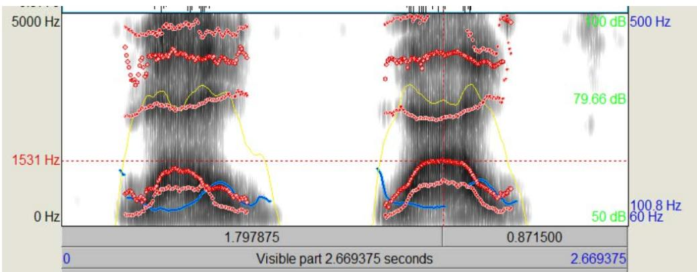
4、EEE 音训练，尽量咧开嘴，用较高的音高持续发出 E（衣，或者拼音i）的声音，你会观察到你的喉结在向上运动，尝试保持它的位置。如果你能模仿动画片里的女巫拖着长音的“hihihihi”笑就更好不过，你会发现当你连续发出“hi”的声音时，喉部慢慢稳定在了更高的位置。
5、大狗小狗训练，尝试模仿一只大狗，想象它夏天热到不行的时候趴在地上伸着舌头大口喘气的声音，那是低沉的 ho、ho、ho的喘息声。然后想象一只小狗，同样想象它伸着舌头的喘气声，那是短促的 ha、ha、ha 的喘息声，观察你的喉结是否向上移动了，并尝试感受喉部肌肉、控制它往更高的位置固定。
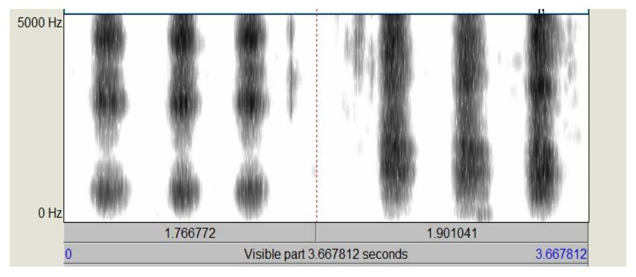
6、吸血鬼叫声训练，尝试模仿一个吸血鬼，先发出“huuuu”的低沉声音，然后张大嘴巴完成“huuuaaaaa”的气流，观察你的喉结是否向上移动了，并尝试感受喉部肌肉、延长这个声音，控制喉部在较高的位置固定。
你可以尝试上面所有的练习方法，也可以只用一种你最能理解或者最好做到的，甚至可以用你自己在模仿和玩耍中找到的其他特殊方法——只要这种方法能让你尽可能放松且稳定地抬高喉部，记住练习的目标：找到肌肉紧绷感，尝试初步控制肌肉，稳定喉位高度。
（二）元音练习
能够稳定喉位高度后，我们需要在这种基础上发出不同的声音，首先是最基础的单元音，练习的具体方法是，打开录音软件录音，首先用你的女性音高（你在 F0训练中得到的）和正常的喉位依次读出元音（可以是国际音标的元音，也可以是 AEIOU 五元音，或者拼音的韵母 a、o、e、i、u、ü），接着，用你上面掌握的方法抬高并稳定高喉位，然后以同样的音高依次读出同样的元音。结束录音后，导入 praat 进行分析，观察 F2共振峰是否升高，对没有升高的元音再单独进行练习。如果你不想使用 praat，也可以直接用耳朵重新听录音，感受声音变化，是否有"清晰""明亮"的感觉，如果没有，对不足的元音再单独练习。
如果单元音练习完成，就可以再进阶练习双元音（如 ai、ao、ou、ie、iu等等）
F2是声音女性化的重要特征，所以高喉位训练是声音女性化的重中之重，本节的练习可能花费很长时间。更重要的是，因为本节的练习涉及对肌肉的控制、在生理意义上建立一种新的肌肉反射行为，所以并不能只是被动地跟随固定步骤练习，而是需要你主动地玩自己的声音（还记得笔者在前言中说过的吗？），有意识地体验、分析自己的声音。如果你只是被动地、课业式地去"学习"，那你很可能要花费更长的时间，甚至可能一无所获。
但声音特征的进一步修饰，比如下面我们要接触到的提高 F1的技巧也同样会进一步改变 F2，请注意。
（三）喉腔开放和放松练习：
我们上面提到过，高喉位极易伴随喉腔挤卡的现象，导致喉咙损伤，所以我们需要补充一些关于喉腔开放和肌肉放松的练习。
声乐训练中的喉腔开放（open throat）和放松（relaxing）本质上没有太大区别，但侧重点稍有不同，喉腔开放侧重于稳定喉位在不过高的水平上、以及保持声带不过分紧绷、加强气流，而放松侧重于围绕下颌和舌头肌肉的放松。大概的练习方式有以下几种：
1、哈欠练习，打个哈欠，感受喉位的下降，你会感到喉咙被打开，气流在增大。尝试找到打出哈欠之前准备时的感觉，在不打出哈欠的情况下让喉位下降，这样的练习有助于你的喉咙放松。
2、放松下巴练习，抬高喉位时，下巴往往会自然收紧并向上抬起，你需要让下巴处在比自然状态下微张嘴时更低的位置（或者通俗地说，让下巴往下掉一点），这可以舒缓一系列舌骨肌肉，并使喉腔开放。尝试将这种下巴位置作为自然状态，在此基础抬高喉位说话并慢慢形成习惯。
3、放松声带练习，声乐理论中的声带松紧（tight/loose）本质上是气流的通过率，而改善气流也是我们后面会讲到的声音女性化的修饰特征之一。这里我们可以简单了解，即对男性的基础声音来说，在语音中适当强化气流也有助于喉腔开放。后面我们会专门提到气流的练习。
需要强调的是，上述练习方式只是基础性的，练习喉腔开放和放松最重要的仍然是自己主动的体验和探索。正如我们反复提到的，抬高喉位本质上是舌骨上肌群和甲状舌骨肌的协同工作，当这些肌肉紧绷时，整个舌骨肌群和喉内肌群的其他肌肉往往也会出现紧绷，而我们最终要做的是减少其他肌肉的紧绷，这种肌肉控制并不能完全依靠死板的练习形成，而是需要练习者自己反复体验、修正，建立自己的肌肉反应。
F2 训练的自我评估标准
- ✅ 同一元音对比（正常喉位 vs 高喉位），F2 提升 ≥ 200Hz
- ✅ 或者听感上明显感到声音从"暗沉"变为"明亮"
- ✅ 能在高喉位状态下连续说出 5 个以上不同元音而不感到喉咙紧绷
- ✅ 用手摸喉结，能感受到它稳定在比自然状态高约 1-2 指宽的位置
- ⚠️ 如果你感到喉咙发紧、声音发干、像被掐住——这是吞咽陷阱的信号，需要回到喉腔开放练习
- ⚠️ 如果你的 F2 提升了但声音听起来像"米老鼠"——说明舌根后缩了，需要练习舌位前移
三、针对提高 F1：
机制说明
我们在前面讲过，F1 主要受口腔开度和舌面高度的影响。从扰动理论的角度：F1 的速度波腹在口唇附近，当口腔前端扩张（张大嘴）时，F1 升高；当口腔前端收窄（闭嘴、舌面抬高）时，F1 降低。
回顾我们的数据表：女性发 /a/ 时 F1 高达 880-950Hz，男性只有 710-750Hz。这个差异主要来自两个习惯差异：
1. 女性说话时下颌运动幅度更大——嘴该张大时就大胆张大
2. 女性在某些元音上舌面整体位置略低——给口腔留出更多空间
如果你平时注意观察，你会发现大部分男性说话时，张嘴的程度很小，嘴型变化的幅度很小，而女性说话时嘴型变化的程度更大。
练习方法
练习提高 F1前，为了方便准确测量共振峰，建议修改 praat时频图的参数设置，将 spectrogram settings 中的 view range 调整到 0-2000Hz，同理，将 formant settings中的 formant ceiling 设定为 2000Hz，number of formants 设定为 2（即只显示 F1 和F2共振峰）。
具体训练步骤：
张口训练： 对于 a、o 元音，尝试用更大的嘴型发出声音，发 a 音时，下颌比平时下拉更多，发 o音时，减少噘嘴的程度，更多地张开嘴，用嘴唇向内包裹的方式形成圆唇状发音。使用 praat 记录并观察 F1的位置。
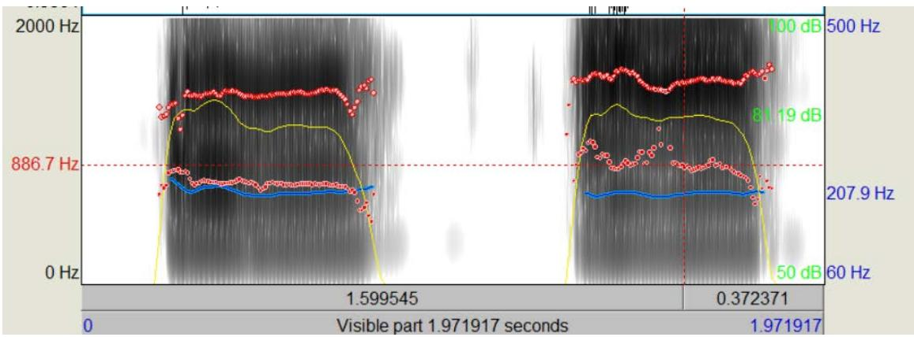
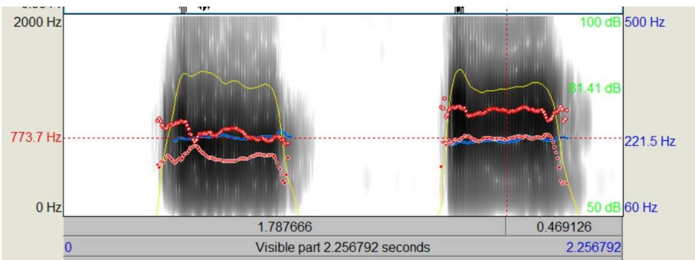
咧嘴训练： 对于元音 e，尝试将嘴张大的同时咧开一些。使用 praat 记录并观察 F1的位置。
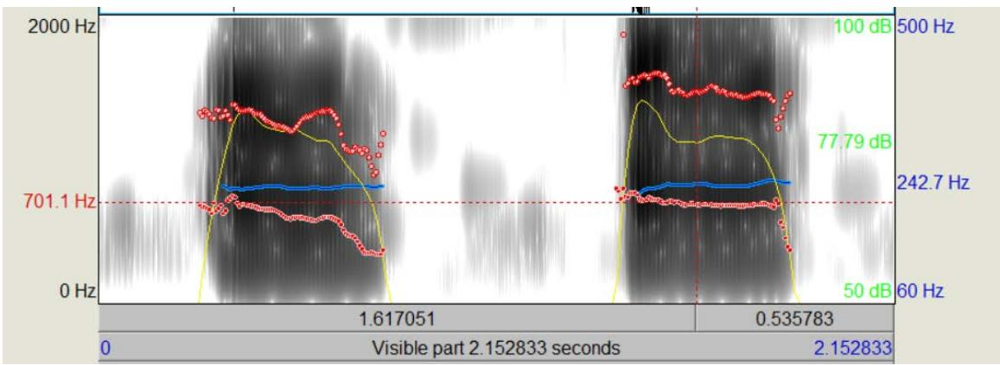
双元音训练： 对 ia、ie、ao、ou等双元音，在发出或过渡至 a、o、e 时采用与上面相同的方式发音。
舌位训练： 舌位的高低前后不仅影响 F1，也会在一定程度上影响 F2，但与嘴巴张开不同的是，舌位虽然影响 F1、F2，进而影响声音的性别感知，但对于所有女性来说，并没有相对统一的、明显区别于男性说话者的舌位特点。诚然，一些"咬舌音"或抬高舌面的说话方式会听起来更"嗲"或"可爱"，但这并不是声音女性化必须的方式。所以总的来说，舌位训练并没有固定的模式，练习者可以采用元音练习的方式，对同一元音尝试多种不同的舌位，自行分析和感受其发音，选择最适合自己、或最喜欢的一种舌位加以练习即可。
F1 训练的自我评估标准
- ✅ 开口元音 /a/ 的 F1 达到 ≥ 850Hz（女性范围）
- ✅ 元音 /e/ 的 F1 达到 ≥ 550Hz
- ✅ 听感上声音更"通透"、更"开放"，而不是闷在嘴里
- ✅ 能在连续语句中自然地保持较大的嘴型变化幅度
- ⚠️ 注意：高元音 /i/、/u/ 的 F1 本来就低，不需要刻意提高——它们的嘴型本来就是闭合的
四、针对其他修饰性因素
（一）改善气流
正如我们在声音的性别感知部分中提到过的，谐波噪声比 HNR 代表的呼吸声音，也就是声音中气流的因素，也能对声音女性化起到很好的修饰作用。但要注意，改善声音中的气流不等于使用吹气音（或者说耳语）说话，也不完全等同于声乐训练中的"气声唱法"。改善气流的本质就是一定程度地放松声带。女性的说话声音相对于男性而言，声带更放松，气流的通过率更高。我们可以通过以下练习步骤改善气流特征：
1、将手掌放在嘴巴前面，张开嘴，做哈气的动作，你会感到手掌上有温热的气流
2、保持嘴型和哈气的状态，使声带振动，在未受训练的情况下，通常你会感到手掌上气流明显减弱
3、尝试在保持声带振动的同时使气流增加，确保你在稳定地发出有振动的声音的同时，手掌重新感受到气流，保持数秒钟，重复以上练习。
当你能熟练做到发声的同时有气流后，再进行元音训练，用这种有气流的声音依次发出元音，直到每个元音都可以感受到气流。但注意，不同元音的气流程度差异是正常的，通常来说，开口程度越大的元音可用的气流也更多，而如 o、u等开口程度小的元音，气流小甚至没有气流都是正常的。如果过分追求气流充足，可能会导致声音变为吹气音，失去原本的振动声音，这样的声音通常是无法作为说话声音使用的。
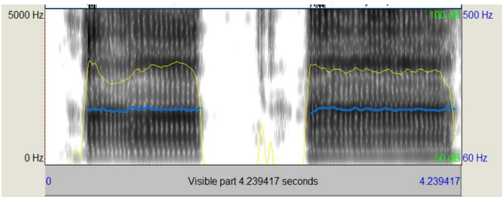
（二）增加声调起伏
声调起伏是指词语和语句长度上音高的高低变化，男性通常的发声习惯是平缓的，音高的变化较小，而女性的发声习惯中音高变化更大，如果你注意观察，在生活中很容易发现这种特征。练习声调起伏的训练需要建立在元音和单字训练的基础上。
朗诵是一种很好的声调起伏练习，你可以在朗诵的过程中体会声调的起伏感，然后慢慢在口语中加入这种特征。但要注意，虽然大部分女性的声调起伏比男性更多，但并没有达到朗诵时常见的起伏程度。在口语中加入这种特征时，需要你注意观察真实的女性口语习惯，适度地增加起伏感。
（三）Twang（咽音）——保护嗓子的高阶技巧
在改善气流和增加声调起伏之外，我们要特别介绍一个对声音女性化非常有帮助的技巧：Twang（国内一般译为咽音）。
还记得我们在源-滤波器理论中提到的"非线性耦合"吗？Twang 的物理原理正是利用了这个机制：
Twang 是什么： 通过适度收窄会厌上方的管径（会厌管/epilaryngeal tube），使咽部形成一个喇叭状的空间。
Twang 的声学效果：
- 增加整个声管的惰性抗（inertive reactance）
- 在声带闭合的瞬间提供"气动缓冲"，减少声带碰撞损伤
- 极大增强 3000Hz 附近的高频能量（类似歌手共振峰效应）
- 让发声者用更少的力气发出更明亮、更有穿透力的声音
为什么对声音女性化特别重要： 声音女性化需要长期使用高喉位，声带在较高频率下振动，碰撞力度更大。如果没有 Twang 提供的惰性抗保护，长期高喉位发声很容易导致声带疲劳甚至损伤。Twang 就像给高速运转的声带加了一层"气垫保护"。
简单的 Twang 体验方法：
- 模仿鸭子叫"嘎嘎嘎"
- 模仿巫婆的笑声"嘿嘿嘿"
- 用鼻音很重的方式说"嗯哼"，然后张开嘴保持那个咽部的感觉
感兴趣的读者可以自行查找相关教学视频进行更系统的练习。
（四）其他因素
声音女性化的修饰性特征还包括减少声音抖动、使用更少的声带厚度等方面，但这些进阶的特征往往需要更专业和持久的声乐训练，而且这些特征对声音性别感知的贡献是微乎其微的——声音抖动过量、声带偏厚的顺性别女性也随处可见，对于 MTF以"被感知为女性"为目标的声音女性化来说没有那么必须。我们就不进一步展开介绍了。
当你完成了以上各项训练后，可以用以下标准检验你的综合水平：
| 维度 | 达标标准 | 检测方法 |
|---|---|---|
| F0（音高） | 稳定 ≥ 180Hz | Praat 蓝线 |
| F2（明亮度） | 比自然状态提升 ≥ 200Hz | Praat 红点对比 |
| F1（通透度） | /a/ 音 F1 ≥ 850Hz | Praat formant 读数 |
| 喉部健康 | 连续说话 5 分钟无不适 | 自我感受 |
| 自然度 | 能在对话中维持而不"掉回去" | 录音回听 |
| 声调起伏 | 语句中有自然的音高变化 | 录音回听 |
最终目标不是每个数值都完美，而是在连续自然的语句中，能够同时维持高 F0 + 高 F2 + 适当 F1 + 自然的声调起伏，并且喉部没有不适感。 这需要时间，需要耐心，更需要你像玩耍一样去探索和享受这个过程。
参考文献注释：
[1] The Relative Contributions of Speaking Fundamental Frequency and Formant Frequencies to Gender Identification Based on Isolated Vowels，VOLUME 19, ISSUE 4, P544-554, DECEMBER 01, 2005
[2] Kim HT. Vocal Feminization for Transgender Women: Current Strategies and Patient Perspectives. Int J Gen Med. 2020
[3] Suire, A., Tognetti, A., Durand, V. et al. Speech Acoustic Features: A Comparison of Gay Men, Heterosexual Men, and Heterosexual Women. Arch Sex Behav 49, 2575–2583 (2020).
[4] Van Borsel J, Janssens J, De Bodt M. Breathiness as a feminine voice characteristic: a perceptual approach. J Voice. 2009
[5] Titze, I.R. Nonlinear source-filter coupling in phonation: Theory. J. Acoust. Soc. Am. 2008
[6] Fant, G. Acoustic Theory of Speech Production. Mouton, 1960
[7] Story, B.H. An overview of the physiology, physics and modeling of the sound source for vowels. Acoust. Sci. & Tech. 2002